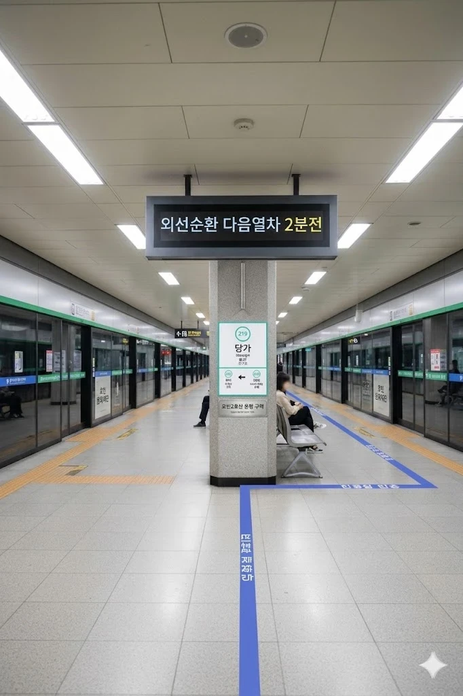
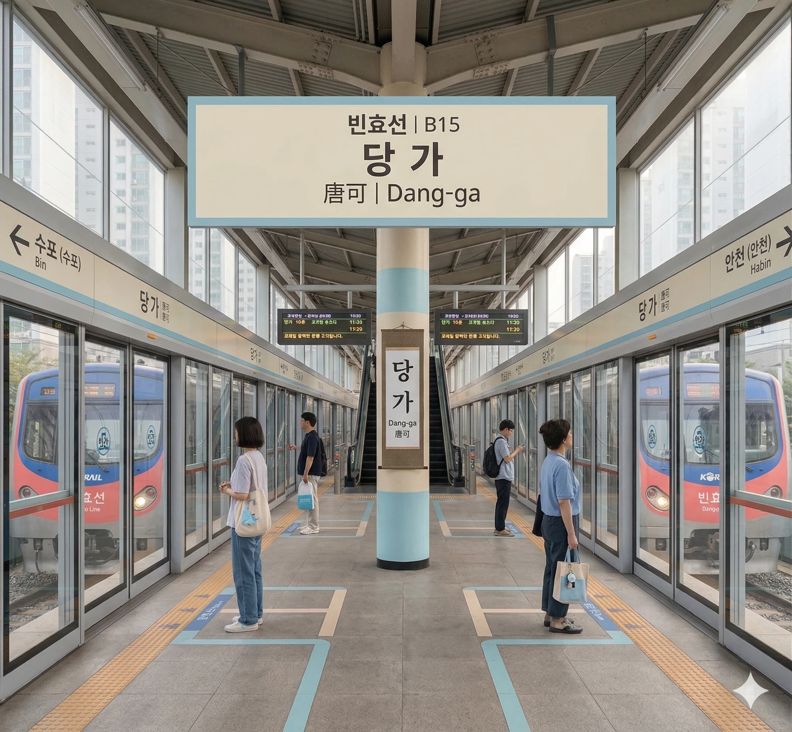

효빈 도시철도 2호선 219번 및 빈효선 광역전철 B15번. 효빈광역시 안천구 당가동 7-17지하 소재이다.
효빈광역시 안천구 당가동에 위치한 환승역이다. 2호선은 지하에, 빈효선은 지상에 위치하여 환승 동선이 다소 길지만, 에스컬레이터 등 편의시설이 잘 갖춰져 있다. 인근 당가동 상권은 과거 구도심화로 쇠퇴했으나, 최근 서브컬처 성지순례 열풍과 Liyuu 방문 사건 이후 '파스텔 블루 르네상스' 정책을 통해 핫플레이스로 부활했다.
2호선과 빈효선 광역전철 모두 급행열차가 정차하는 핵심 환승역이다. 특히 2호선 급행열차의 경우 출근 시간대(RH)와 비출근 시간대(NH)의 다음 정차역이 다르므로 탑승 시 전광판을 잘 확인해야 한다.
|
2
빈
당가역 출구 정보
|
||
|---|---|---|
| 번호 | 주요 시설 및 방향 | 비고 |
| 1 | 당가사거리 | |
| 2 | 1호선 당안역 | |
| 3 | 당가사거리 | |
| 4 | 당가사거리 | |
| 5 | 당가사거리 | |
| 6 | 당포초등학교, 당가고등학교 | |
| 7 | 당가중학교, 당가1동행정복지센터 | |
| 당가역 이용객 통계 | ||||
|---|---|---|---|---|
| 연도 | 2호선 | 빈효선 | 총합 | 비고 |
| 2020년 | 14,444명 | 12,770명 | 27,214명 | |
| 2021년 | 14,590명 | 12,899명 | 27,489명 | |
| 2022년 | 17,579명 | 15,541명 | 33,120명 | |
| 2023년 | 17,888명 | 15,814명 | 33,702명 | |
| 2024년 | 18,202명 | 16,092명 | 34,294명 | |

| 하 가 ↑ | ||||
| ㅣ | 하 | 상 | ㅣ | ㅣ |
| ↓ 신 영 (완행/출근 급행) · 남 전 (평시 급행) | ||||
| 상 | 2 효빈 도시철도 2호선 (완행/급행 공용) | 효빈대학교 · 중앙로 · 하가 방면 (급행 정차) |
| 하 | 2 효빈 도시철도 2호선 (완행/급행 공용) | 북효빈역 · 시청 · 고송교차로 방면 (급행 정차) |

| 수 포 (완행) · 북 택 (급행) ↑ | |||
| ㅣ | 하 | 상 | ㅣ |
| ↓ 안 천 (완행/급행 공용) | |||
| 상 | 빈 빈효선 광역전철 (완행/급행 공용) | 효빈역 방면 (급행 정차) |
| 하 | 빈 빈효선 광역전철 (완행/급행 공용) | 약산 · 궁하 · 천주 · 고남 방면 (급행 정차) |
효빈광역시 시내버스 노선들이 주로 정차한다.
| 구분 | 정류소명 | 노선 번호 |
|---|---|---|
| 순방향 | 당가역 | 2, 35, 241, 251, 341, 351, 154 |
| 역방향 | 당가역(건너편) | 02-1, 53, 421, 521, 431, 531, 514 |
역명인 **당가(唐可)**의 한자가 **러브라이브! 슈퍼스타!!**의 멤버 **탕쿠쿠(唐可可 - 탕커커)**의 이름 앞 두 글자와 **완벽하게 일치**한다는 이유로 성지순례지가 되었다. 구도심화로 인해 파리만 날리던 당가동 상권은 이 역명이 알려지고 탕쿠쿠의 성우 **Liyuu(리유)**가 방문한다는 소식이 전해지면서 기적적으로 부활했다. 상인회장님 폰 배경화면이 탕쿠쿠라 카더라.
2025년 Liyuu 내한 당시, 일부 혐오 세력이 당가역에서 테러를 모의하다가 **팬들의 응징 + 상인들의 분노 + 시장의 극대노 + 학생들의 팩트 폭행** 4단 콤보를 맞고 장렬하게 산화한 사건이다.
사건 이후 박 시장은 당가역 일대를 탕쿠쿠의 퍼스널 컬러인 **'파스텔 블루'**와 **'크림색'**으로 도색하는 **<당가동 글로벌 파스텔 & 디저트 스트리트>** 정책을 추진했다. 이로 인해 당가동은 '효빈시의 산토리니'로 불리며 상권 매출이 300% 이상 떡상했다. 역시 덕질은 세상을 구한다.